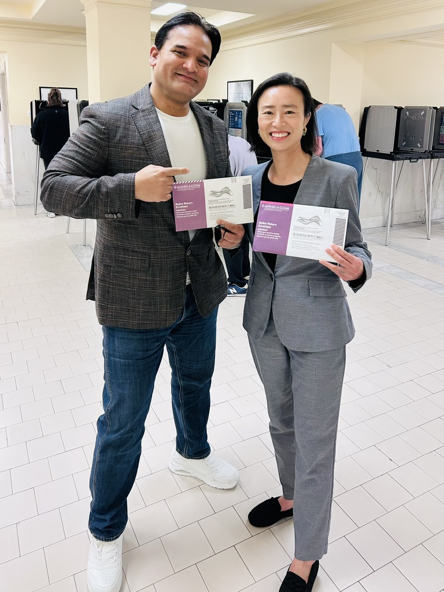
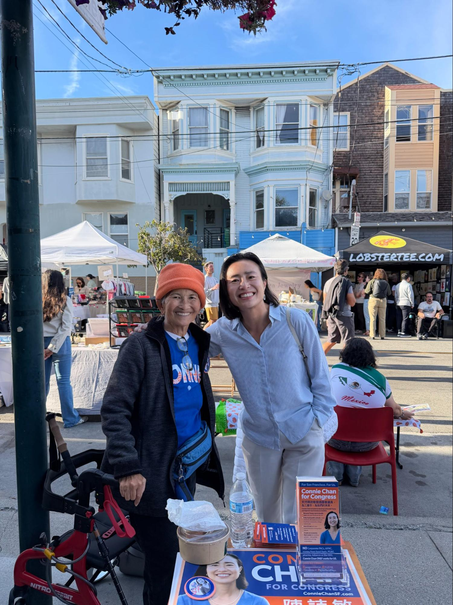

Dear barallies,
In one month, ballots will start arriving in mailboxes. We need your help this month making sure everyone is registered to vote, has a plan to vote, and is voting for Connie Chan.

Connie and a supporter voting in June. Make sure you have a plan to vote for this November’s election!
Our campaign isn’t powered by billionaires or corporate donors. It’s powered by working people like you, and we know that together our people-powered campaign can and will overcome the corporate cash being poured into this race. Can you join us for a volunteer shift to get the word out about Connie’s agenda and goals?

Connie and a supporter at the Noe Valley Night Market. Can you join us for a volunteer shift this week to help spread the word about Connie?
Saturday we will be knocking doors at McCoppin Square Park. RSVP here
Sunday we will be canvassing in the Mission. Meet at our campaign headquarters at 3043 24th Street. RSVP here to join.
Every Tuesday and Thursday join us as we phonebank voters from our Campaign HQ.
Interested in visibility? Swing by the office anytime between 10am-6pm on weekdays and we’ll get you set up to do visibility at a farmers market, or put up signs in your local neighborhood corridor.
Thanks for all your support.
In solidarity,
Team Connie